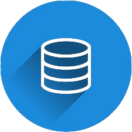

Sobre o Curso
O curso de Análise e Desenvolvimento de Sistemas forma profissionais capacitados para projetar, desenvolver, implementar e gerenciar sistemas de informação. Aprenda sobre programação, banco de dados, engenharia de software e muito mais!
Algoritmos e Lógica de Programação

Nesta disciplina, você aprenderá os fundamentos da lógica de programação e desenvolverá habilidades para criar algoritmos eficientes.
Simulado de Algoritmos e Lógica de Programação
Teste seus conhecimentos! Responda às 8 questões a seguir e descubra seu nível de conhecimento em Algoritmos e Lógica de Programação.
Banco de Dados
Nesta disciplina, você aprenderá a modelar, projetar e gerenciar bancos de dados relacionais e não relacionais.
Simulado de Banco de Dados
Teste seus conhecimentos! Responda às questões a seguir e descubra seu nível de conhecimento em Banco de Dados.
Engenharia de Software

Nesta disciplina, você aprenderá sobre os processos, métodos e ferramentas para desenvolver software de alta qualidade.
Simulado de Engenharia de Software
Teste seus conhecimentos! Responda às questões a seguir e descubra seu nível de conhecimento em Engenharia de Software.